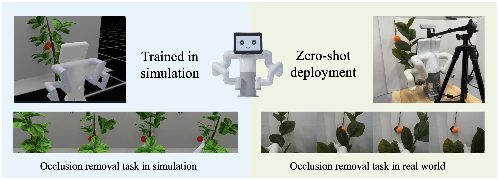
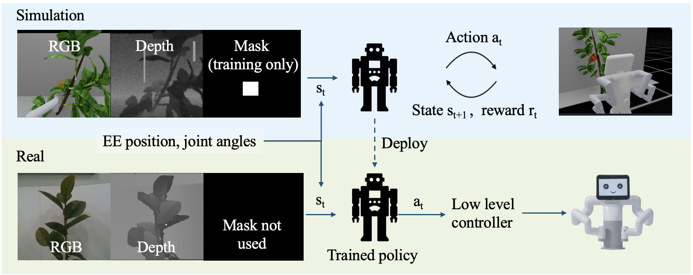
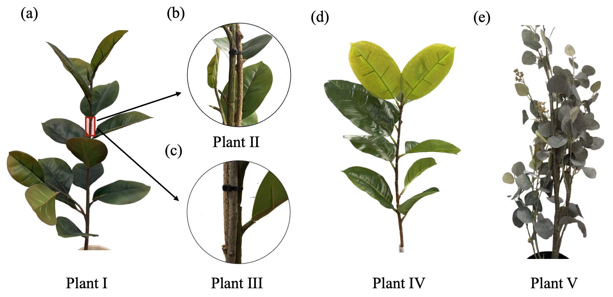
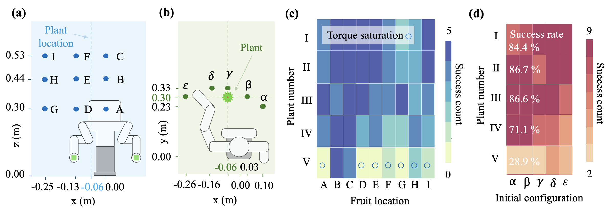
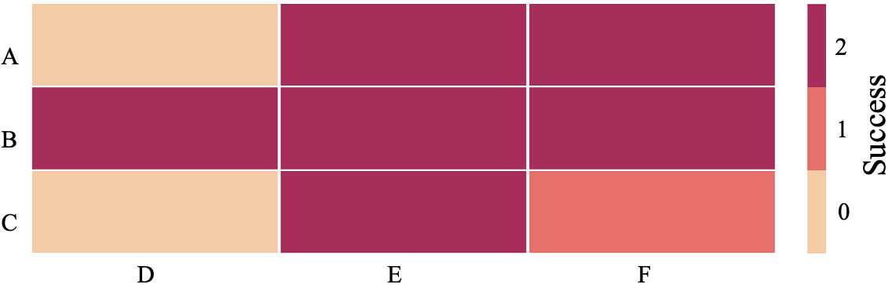
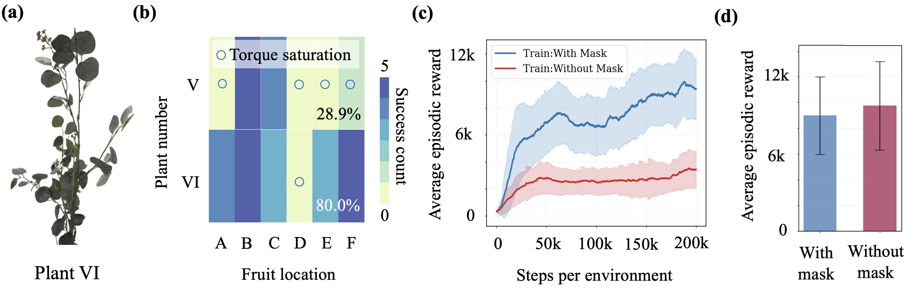

Simulate a generic plant.
An abstract finite-element plant in Isaac Lab, with a central stem, occluding leaves, and a hidden fruit. Plant pose, lighting, textures, torque, sensor noise, and fruit placement are all randomized.
Overview
Before a robot can pick a fruit, it often has to find it. We train a policy entirely in simulation to push stems and leaves aside until a hidden fruit is visible, then run it on a real robot and real plants without any fine-tuning.

Top: end-to-end RL training on a generic deformable plant in simulation (left), deployed zero-shot on a real stemmed plant (right) with the MyBuddy 280 robot (center). Bottom: frame-by-frame occlusion removal in simulation and in real-world trials, showing that a policy trained on an abstract plant model generalizes to physical plants.
Abstract
Autonomous harvesting in the open presents a complex manipulation problem. In most scenarios, an autonomous system has to deal with significant occlusion and require interaction in the presence of large structural uncertainties (every plant is different). Perceptual and modeling uncertainty make design of reliable manipulation controllers for harvesting challenging, resulting in poor performance during deployment. We present a sim2real reinforcement learning (RL) framework for occlusion-aware plant manipulation, where a policy is learned entirely in simulation to reposition stems and leaves to reveal target fruit(s). In our proposed approach, we decouple high-level kinematic planning from low-level compliant control which simplifies the sim2real transfer. This decomposition allows the learned policy to generalize across multiple plants with different stiffness and morphology. In experiments with multiple real-world plant setups, our system achieves up to 86.7% success in exposing target fruits, demonstrating robustness to occlusion variation and structural uncertainty.
Video
Method
Contact with a deformable plant is hard to model and harder to transfer. So the learned policy only decides where the arm should go, and a compliant low-level controller decides how to get there safely on the real robot.
An abstract finite-element plant in Isaac Lab, with a central stem, occluding leaves, and a hidden fruit. Plant pose, lighting, textures, torque, sensor noise, and fruit placement are all randomized.
A PPO policy maps RGB-D images, joint angles, and end-effector position to delta joint angles. It is rewarded for reducing occlusion, reaching and holding full visibility, and staying still once the fruit is found.
The frozen policy runs on a MyBuddy 280 with a RealSense camera over ROS 2. A servo position controller tracks its commands without exerting excessive force on the plant.

Sim: the robot interacts with an abstract plant in Isaac Lab, receiving RGB, depth, and a fruit mask (training only). Real: the trained policy runs on the MyBuddy 280; an RGB-D camera provides observations and a low-level controller executes the high-level commands for safe interaction with real plants.
During training the policy also sees a ground-truth fruit mask. It speeds up learning on heavily occluded fruit, but the deployed policy relies only on RGB-D and proprioception.
After ~50M simulation steps, the policy locates the stem and fruit, slides the end-effector along the stem, pushes occluding foliage aside, and stops once the fruit is exposed. It reaches 96.1% success over 20,000 randomized simulated episodes.
Real-world experiments
Each plant was tested with the fruit at nine positions (a 3 × 3 grid 20 cm behind the plant) from five collision-free starting poses. Success means at least 90% of the fruit is visible for five consecutive frames. All plants are artificial and differ in stiffness and shape.
Central stem, broad foliage
Plant I, double-reinforced
Plant I, triple-reinforced
Stemmed, similar to Plant I
Bushy, no clear stem, stiffest

Plants I and IV have a clear central stem similar to the simulated plant. Plants II and III are double- and triple-reinforced versions of Plant I. Plant V is dense and bushy with no distinct central stem, the hardest case for both perception and actuation.

(a) Fruit locations A–I behind the plant. (b) The five initial arm configurations α–ε. (c) Successes per plant and fruit location (out of five). (d) Successes per plant and start pose (out of nine). Circles mark torque saturation, the main cause of failure on the stiffest plant.
Generalization
With no architecture changes, the same policy handles sequential exposure: once a fruit is uncovered it is removed, and the robot keeps going without a reset. Both fruits were exposed in 16 of 18 two-fruit trials on Plant I. The second fruit took only 50–150 steps, since removing the first one already reduced occlusion.

Fruits uncovered (0–2) for each pair of first (A–C) and second (D–F) fruit locations. Failures occur only when both fruits are heavily occluded under one starting pose, where torque limits prevent full exposure.
Analysis
A policy trained with realistic textures and lighting transferred to real plants. One trained in a low-fidelity version with flat textures and simple lighting behaved erratically and could not be deployed. The plant model itself is generic, not a reconstruction of any test plant.
On stiff plants the arm hits its torque limits; even failed trials often reach 70–80% visibility. Softening the plant while keeping its appearance (Plant VI) lifts success to 80% across valid fruit positions. Depth artifacts from the RealSense, such as ghosted stems, account for some other misses.

(a) Plant VI, a mechanically more compliant variant with the same visual complexity. (b) Success on Plants V and VI across fruit locations. (c) Training with the privileged fruit mask converges faster to higher returns. (d) Removing the mask at test time has negligible effect.
Citation
@inproceedings{subedi2025find,
title = {Find the Fruit: Zero-Shot Sim2Real RL for Occlusion-Aware Plant Manipulation},
author = {Subedi, Nitesh and Yang, Hsin-Jung and Jha, Devesh K. and Sarkar, Soumik},
booktitle = {Proceedings of the IEEE International Conference on Robotics and Automation (ICRA)},
year = {2026}
}This work is jointly funded by the NSF–USDA COALESCE program (NSF award #1954556; USDA award #2021-67021-34418) and AIIRA grant #2021-67021-35329.